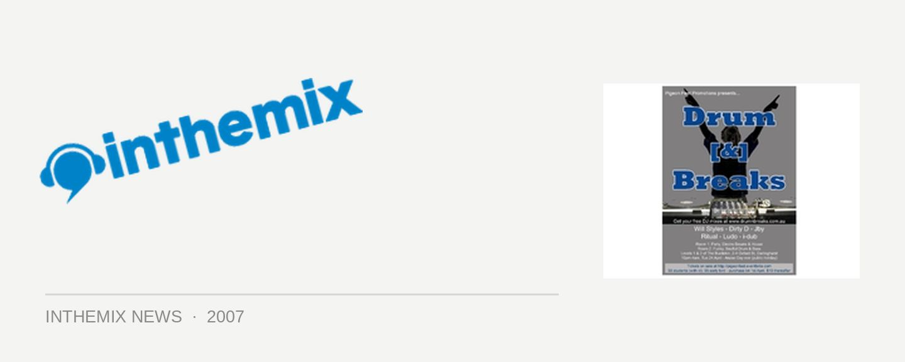

Drum [&] Breaks rolls into the Burdekin on Anzac Eve
Looking for a fun alternative to stock-standard Sydney clubbing next Tuesday night? Look no further than the Burdekin as two of its levels are taken over by a fine assortment of funky and upbeat broken beats. Drum [&] Breaks aims to give a little bit of exposure to those two musical genres that, at the moment, are criminally underrepresented in the Sydney scene, while keeping things on a fun and funky tip.
The Mini Bar downstairs will play host to funky electro party breaks, with a special set from Funktrust main man Will Styles along with Dirty D and Jby, who promise a cavalcade of party beats. But if rollin’ is your thing then head upstairs to the Viper Bar for an evening of funky and soulful drum n’ bass, played by some of the best that Sydney has to offer: Ritual, Ludo and i-dub.
The organisers reckon the time is right for a party that emphasises the funkier, lighter and party side of drum ‘n bass and breaks: bringing the girls back to the dancefloor and showing that these genres need not always be dark, dirty or alienating. They’ll also be bringing an enhanced sound system to ensure the event is one to remember.
Get on down to the Burdekin next Tuesday night for Drum [&] Breaks , cost of entry is only $10 or $5 for concession card holders.